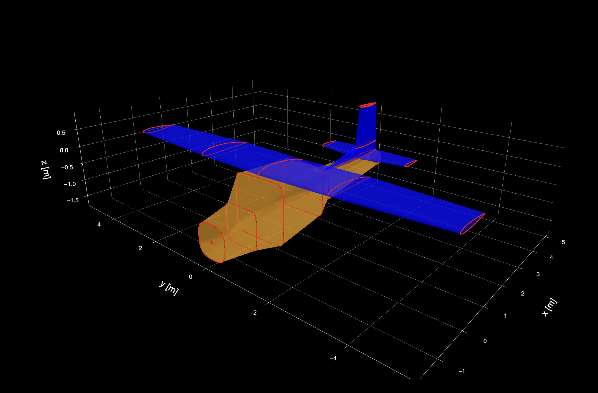

Basic Usage
This guide shows you how to build a complete airplane geometry using AeroGeometry.jl. We'll recreate a Cessna 152 by defining its wings, stabilizers, and fuselage.
Installation
using Pkg
Pkg.add("https://github.com/antoniosgeme/AeroGeometry.jl.git")s
Basic Airfoil Operations
First, let's see how to work with airfoils:
using AeroGeometry
import Plots as plt
plt.plotly()
# Load airfoils from the built-in database
airfoil1 = Airfoil("e221")
airfoil2 = Airfoil("naca6409")
# Blend two airfoils
airfoil3 = blend_airfoils(airfoil1, airfoil2)
# Plot them
plt.plot(airfoil1)
plt.plot!(airfoil2)
plt.plot!(airfoil3)
# Plot the local camber
camb = camber(airfoil3)
plt.plot!(camb[:,1], camb[:,2], lw=3)Building an Airplane
Now let's build a complete airplane. AeroGeometry provides a utility function ft2m to convert feet and inches to meters:
using AeroGeometry: ft2mDefine the Main Wing
The main wing is defined by creating wing sections at different spanwise locations:
wing_sections = [
WingSection(
airfoil=Airfoil("naca2412"),
position=[0, 0, 0], # Leading edge location [x, y, z]
chord=ft2m(5, 4), # Chord length
),
WingSection(
airfoil=Airfoil("naca2412"),
position=[0, ft2m(7), ft2m(7) * sind(1)], # Add dihedral
chord=ft2m(5, 4),
),
WingSection(
airfoil=Airfoil("naca0012"),
position=[ft2m(4, 3/4) - ft2m(3, 8 + 1/2), ft2m(33, 4)/2, ft2m(33, 4)/2 * sind(1)],
chord=ft2m(3, 8 + 1/2),
twist=0 # Twist angle in degrees
)
]
wing = Wing(name="Main Wing", sections=wing_sections, symmetric=true)Define the Horizontal Stabilizer
hs_sections = [
WingSection(
airfoil=Airfoil("naca0012"),
position=[0, 0, 0],
chord=ft2m(3, 8),
twist=-2 # Negative twist for tail down force
),
WingSection(
airfoil=Airfoil("naca0012"),
position=[ft2m(1), ft2m(10) / 2, 0],
chord=ft2m(2, 4 + 3 / 8),
twist=-2
)
]
horizontal_stabilizer = Wing(
name="Horizontal Stabilizer",
sections=hs_sections,
symmetric=true
)
# Move it to the correct position on the aircraft
translate!(horizontal_stabilizer, [4.0648, 0, -0.6096])Define the Vertical Stabilizer
vs_sections = [
WingSection(
airfoil=Airfoil("naca0012"),
position=[ft2m(-5), 0, 0],
chord=ft2m(8, 8),
twist=0
),
WingSection(
airfoil=Airfoil("naca0012"),
position=[ft2m(0), 0, ft2m(1)],
chord=ft2m(3, 8),
twist=0
),
WingSection(
airfoil=Airfoil("naca0012"),
position=[ft2m(0, 8), 0, ft2m(5)],
chord=ft2m(2, 8),
twist=0
)
]
vertical_stabilizer = Wing(name="Vertical Stabilizer", sections=vs_sections)
translate!(vertical_stabilizer, [ft2m(16, 11) - ft2m(3, 8), 0, ft2m(-2)])Define the Fuselage
The fuselage is created by defining cross-sections at different longitudinal positions:
# Define fuselage cross-section positions and dimensions
xc = [0, 0, ft2m(3), ft2m(5), ft2m(10, 4), ft2m(12, 4), ft2m(21, 11)]
zc = [ft2m(-1), ft2m(-1), ft2m(-0.85), ft2m(0), ft2m(0.3), ft2m(-0.5, 4), ft2m(0.2)]
radii = [ft2m(0.1), ft2m(1.5), ft2m(1.7), ft2m(2.7), ft2m(2.3), ft2m(1, 4), ft2m(0.7)]
shapes = [2, 3, 7, 7, 7, 5, 3] # Shape parameter for cross-section
fuse_sections = [
FuselageSection(radius=radii[i], center=[xc[i], 0, zc[i]], shape=shapes[i])
for i in eachindex(xc)
]
fuselage = Fuselage(name="Main Body", sections=fuse_sections)
translate!(fuselage, [ft2m(-5), 0, ft2m(-3)])Assemble the Complete Airplane
Finally, combine all components into a single airplane:
airplane = Airplane(
name="Cessna 152",
wings=[wing, horizontal_stabilizer, vertical_stabilizer],
fuselages=[fuselage]
)
# Visualize it
plt.plot(airplane)
Next Steps
Now that you have a complete airplane geometry, you can:
- Export it for use in analysis tools
- Modify dimensions and airfoil shapes
- Add control surfaces
- Create mesh representations
Check out the Reference documentation for details on all available functions and types.